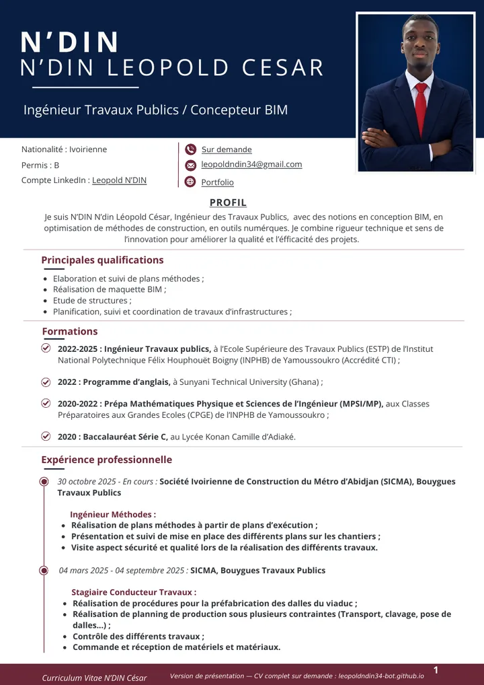

Méthodes & travaux
- Plans méthodes et phasage 2D/3D
- Suivi de conformité, visites sécurité et qualité
- Procédures de préfabrication
- Quantités, commandes et réception de matériaux
Portfolio · Abidjan, Côte d’Ivoire
Ingénieur Travaux Publics / Concepteur BIM
Je transforme des plans d’exécution en méthodes de chantier claires et sûres. Sur la Ligne 1 du Métro d’Abidjan, je prépare le phasage des ouvrages en 2D/3D et j’utilise le calcul probabiliste et la programmation pour éclairer les choix de construction.
01 Profil
Ingénieur des Travaux Publics, je combine rigueur technique et sens de l’innovation pour améliorer la qualité et l’efficacité des projets.
Formé à l’École Supérieure des Travaux Publics de l’INPHB (Yamoussoukro), j’ai construit mon parcours sur le terrain : suivi de travaux routiers et d’assainissement, puis préfabrication et pose des dalles du viaduc de la Ligne 1 du Métro d’Abidjan. J’y suis aujourd’hui ingénieur méthodes : je réalise les plans méthodes à partir des plans d’exécution, je les présente aux équipes et j’en suis la mise en place sur les chantiers.
En parallèle, je développe des compétences en conception BIM, en calcul de structures et en outils numériques : mon projet de fin d’études s’appuie sur un programme Python de simulation Monte-Carlo pour éclairer un choix de méthode de construction.
02 Parcours
Du terrassement routier au viaduc du métro : un parcours construit sur le chantier.
Expérience professionnelle
SICMA — Société Ivoirienne de Construction du Métro d’Abidjan · Bouygues Travaux Publics
SICMA · Bouygues Travaux Publics
Smart Business Holding (SBH)
Smart Business Holding (SBH)
Formation
École Supérieure des Travaux Publics (ESTP) — Institut National Polytechnique Félix Houphouët-Boigny (INPHB), Yamoussoukro · Accrédité CTI
Sunyani Technical University (Ghana)
CPGE de l’INPHB, Yamoussoukro
Lycée Konan Camille d’Adiaké
03 Compétences
Pas de jauges ni de pourcentages : chaque domaine renvoie au projet qui le démontre.
04 Projets
Chaque projet est présenté comme une étude de cas : contexte, démarche, outils, livrables.

Traduire les plans d’exécution en plans méthodes 2D/3D lisibles par le chantier — terrassement, ferraillage, coffrage, pose de dalles et de travées — puis suivre leur mise en œuvre.

Comparer la préfabrication intégrale et les prédalles collaborantes par des analyses probabilistes (PERT, Monte-Carlo) puis trancher avec une analyse multicritère Fuzzy AHP : la préfabrication intégrale est retenue (54 % contre 46 %).
De l’aide à la conception jusqu’à la note de calcul : plans et coupes, maquette 3D, rendus réalistes sous Enscape et dimensionnement des éléments porteurs sous Robot Structural Analysis.
05 CV

Formation, expériences, projets et logiciels en deux pages. Le PDF en libre téléchargement est une version de présentation, sans numéro de téléphone. Le CV complet est envoyé sur demande.
QR code du portfolioScannez-le pour ouvrir ce site depuis un téléphone : il figure aussi sur mon CV papier.
06 Contact
Un poste, une mission, une collaboration ? Écrivez-moi.
Ouvert aux opportunités
Postes en méthodes, travaux ou BIM, missions en free-lance et collaborations sur des projets d’infrastructures, en Côte d’Ivoire comme à l’international.
Demander mon CV complet